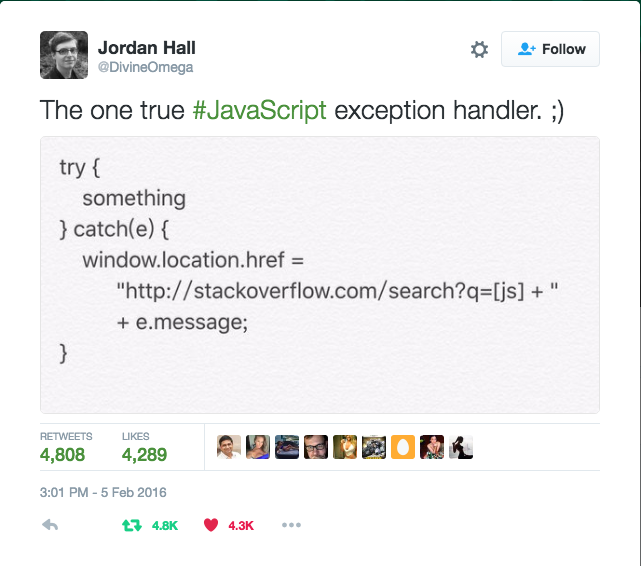
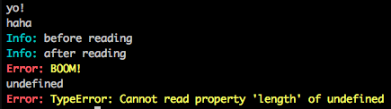
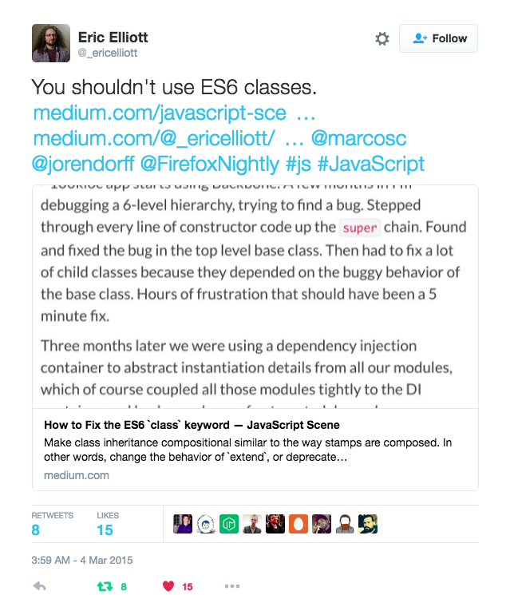
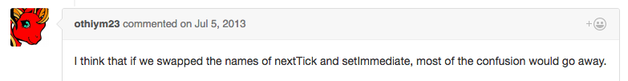
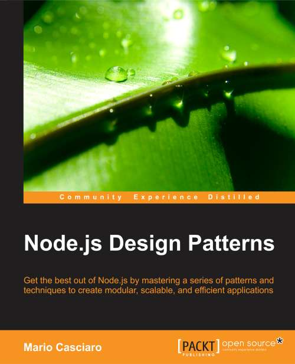

Node-patterns
Node Patterns: From Callbacks to Observer
Project maintained by bomb1e Hosted on GitHub Pages — Theme by mattgraham
footer: © NodeProgram.com, 2016 slidenumbers: true
Node Patterns
From Callbacks to Observer
The one true #JavaScript exception handler pattern

The one true Node exception handler pattern
process.on('uncaughtException',
e => require('opn')(`http://stackoverflow.com/search?q=[node.js ]+${e.message}`)
)Why Turn off Your IM and Care?
- You want to write and organize code better
- You want to become a go-to Node person in your team
- You want to understand Node things a bit deeper
Slides 📄
https://github.com/azat-co/node-patterns
git clone https://github.com/azat-co/node-patterns
About Presenter
Azat Mardan

Twitter: @azat_co Email: hi@azat.co Blog: webapplog.com
About Presenter
- Work: Technology Fellow at Capital One
- Experience: FDIC, NIH, DocuSign, HackReactor and Storify
- Books: Practical Node.js, Pro Express.js, Express.js API and 8 others
- Teach: NodeProgram.com

Node Basics
- JavaScript, but not "==="
- Asynchronous + Event Driven
- Non-Blocking I/O
JavaScript? 😒
- Async code is hard
- Code complexity grows exponentially
- Good code organization is important
^So JavaScript can be tough
Problem
How to schedule something in the future?
Callbacks All the Way!
Functions are First-Class Citizens
var t = function(){...}
setTimeout(t, 1000)t is a callback
Callback Convention
var fs = require('fs')
var callback = function(error, data){...}
fs.readFile('data.csv', 'utf-8', callback)Conventions
-
error1st argument, null if everything is okay -
datais the second argument -
callbackis the last argument
Note
Naming doesn't matter but order matters.
Node.js won't enforce the arguments.
Convention is not a guarantee. It's just a style. — Read documentation or source code.
Problem
How to ensure the right sequence? Control flow
Example
HTTP requests to:
- Get an auth token
- Fetch data
- PUT an update
They must be executed in a certain order.
... // callback is defined, callOne, callTwo, and callThree are defined
callOne({...}, function(error, data1) {
if (error) return callback(error, null)
// work to parse data1 to get auth token
// fetch the data from the API
callTwo(data1, function(error, data2) {
if (error) return callback(error, null)
// data2 is the response, transform it and make PUT call
callThree(data2, function(error, data3) {
//
if (error) return callback(error, null)
// parse the response
callback(null, data3)
})
})
})Welcome to callback hell
fs.readdir(source, function (err, files) {
if (err) {
console.log('Error finding files: ' + err)
} else {
files.forEach(function (filename, fileIndex) {
console.log(filename)
gm(source + filename).size(function (err, values) {
if (err) {
console.log('Error identifying file size: ' + err)
} else {
console.log(filename + ' : ' + values)
aspect = (values.width / values.height)
widths.forEach(function (width, widthIndex) {
height = Math.round(width / aspect)
console.log('resizing ' + filename + 'to ' + height + 'x' + height)
this.resize(width, height).write(dest + 'w' + width + '_' + filename, function(err) {
if (err) console.log('Error writing file: ' + err)
})
}.bind(this))
}
})
})
}
}Callback Hell
- Hard to read
- Hard to modify/maintain/enhance
- Easy for devs to make bugs
- Closing parens -
👿
callbackhell.com
Solutions
- Abstract into named functions (hoisted or variables)
- Use obververs
- Use advanced libraries and techniques
Named Functions
callOne({...}, processResponse1)
function processResponse1(error, data1) {
callTwo(data1, processResponse2)
}
function processResponse2(error, data2) {
callThere(data2, processResponse3)
}
function processResponse3(error, data1) {
...
}Modular Functions
var processResponse1 = require('./response1.js')
callOne({...}, processResponse1)// response1.js
var processResponse2 = require('./response2.js')
module.exports = function processResponse1(error, data1) {
callTwo(data1, processResponse2)
}// response2.js
var processResponse3 = require('./response3.js')
module.exports = function processResponse2(error, data2) {
callThere(data2, processResponse3)
}// response3.js
module.exports = function processResponse3(error, data3) {
...
}Problem
How to modularize code properly?
module.exports = {...}module.exports.obj = {...}exports.obj = {...}
Note: exports = {...} is anti-pattern.
Problem
How to modularize dynamic code or where to initialize?
Solution
module.exports = function(options) {...}module.exports.func = function(options) {...}exports.func = function(options) {...}
Import
// code A
module.exports = function(options){
// code B
}When you require, code A is run and code B is not.
Code A is run only once, no matter how many times you require.
You need to invoke the object to run code B.
Demo
node import-main
Importing Folders / Plugin Pattern
// main.js
var routes = require('./routes')// routes/index.js
module.exports = {
users: require('./users.js'),
accounts: require('./accounts.js')
...
}Singletons
-
require: modules are cached
// module.js
var a = 1 // Private
module.exports = {
b: 2 // Public
}// program.js
var m = require('./module')
console.log(m.a) // undefined
console.log(m.b) // 2
m.b ++
require('./main')// main.js
var m = require('./module')
console.log(m.b) // 3Demo
node main.js
node program.js
Problem
Modules are cached on based on their resolved filename.
Filename will break the caching
var m = require('./MODULE')
var m = require('./module')Or different paths
Solution
global
global.name
or
GLOBAL.name
_log = global.console.log
global.console.log = function(){
var args = arguments
args[0] = '\033[31m' +args[0] + '\x1b[0m'
return _log.apply(null, args)
}require('./logs.js')
Color Logs
global.error = global.console.error = msg =>
console.log( '\x1b[31m\x1b[1mError:\x1b[22m \x1b[93m' + msg + '\x1b[0m' )
global.info = global.console.info = msg =>
console.log( '\x1b[31m\x1b[36mInfo:\x1b[22m \x1b[93m\x1b[0m' + msg )
global.log = console.log
global is powerful... anti-pattern
similar window.jQuery = jQuery
use it sparringly
^with a lot of power comes a lot of responsibility
Problem: How to organize your modular code into classes?
- ES5 Classes are too complex (new, prototype, this)
- ES6 Classes don't allow define property and other issues
{kind=link}

Sidenote: Prototypes
Objects inherit from other objects
Functions are objects too.
Solution
Function factory for objects
module.exports = function(options) {
// initialize
return {
getUsers: function() {...},
findUserById: function(){...},
limit: options.limit || 10,
// ...
}
}Solution 2
require('util').inherits(child, parent)
Problem
Enhance functionality "on the fly"
Decorator: Enhances an object
let userModel = function(options = {}) {
return {
getUsers: function() {},
findUserById: function() {},
limit: options.limit || 10
}
}
let user = userModel()
console.log(user.limit)
let adminModel = (userModel) => {
userModel.limit += 20
userModel.removeUser = () => {}
userModel.addUser = () => {}
return userModel
}
console.log(adminModel(user).limit)// 10 30
Problem
How to enhance classes defined wit prototypal inheritance?
Prototype Decorator: Enhance global object
Object.prototype.toPrettyJSON = function() {
console.log(this)
return JSON.stringify(this, null, 2)
}
let obj = new Object({a: 1})
console.log(obj.toPrettyJSON())Should: https://github.com/shouldjs/should.js
Problem
Non-blocking I/O can be blocked
Have you ever seen this code?
setTimeout(function timeout() {
console.log('Hello Node')
}, 0)// setimmediate.js
setImmediate(function A() {
setImmediate(function B() {
console.log('Step 1')
})
setImmediate(function C() {
console.log('Step 2')
setImmediate(function F() { console.log('Step 3') })
setImmediate(function G() { console.log('Step 4') })
})
})
console.log('Step 0')
setTimeout(function timeout() {
console.log('Timeout!')
}, 0)
console.log('Step 0.5')// Step 0, Step 0.5, Timeout!, Step 1, Step 2, Step 3, Step 4
^// Step 0, Step 0.5, Step 1, Step 2, Timeout!, Step 3, Step 4
^setTimeout is on the next iteration of the event loop ^setImmediate is also, after I/O and before timers (official docs). setImmediate allows you to distribute computation over many turns of the event loop while ensuring that I/O doesn't get starved ^setTimeout is slower
process.nextTick(function A() {
process.nextTick(function B() {
console.log('Step 1')
})
process.nextTick(function C() {
console.log('Step 2')
process.nextTick(function F() { console.log('Step 3') })
process.nextTick(function G() { console.log('Step 4') })
})
})
console.log('Step 0')
setTimeout(function timeout() {
console.log('Timeout!')
}, 0)
console.log('Step 0.5')// Step 0, Step 0.5, Step 1, Step 2, Step 3, Step 4, Timeout!
^nextTick happens before I/O callbacks. So in a case where you're trying to break up a long running, CPU-bound job using recursion, you would now want to use setImmediate rather than process.nextTick to queue the next iteration as otherwise any I/O event callbacks wouldn't get the chance to run between iterations.

Problem
Insure continuity
Node.js Middleware Pattern
Middleware pattern is a series of processing units connected together, where the output of one unit is the input for the next one. In Node.js, this often means a series of functions in the form:
function(args, next) {
// ... Run some code
next(output) // Error or real output
}Express Example
Request is coming from a client and response is sent back to the client.
request->middleware1->middleware2->...middlewareN->route->response
Express.js Middleware
app.use(function(request, response, next) {
// ...
next()
}, function(request, response, next) {
next()
}, function(request, response, next) {
next()
})Problems
- Callbacks are still hard to manage even in modules!
- Callbacks fire just once
- Callbacks fire only at the end
- No way to remove a callback or add a new one "on the fly"
No it's not promises. 😉
^Promises fire just once just as callbacks
Example
- Module Job is performing a task.
- In the main file, we import Job.
How do we specify a callback (some future logic) on the Job's task completion?
Maybe:
var job = require('./job.js')(callback)What about multiple callbacks?
Not very scalable
Solution
Observer pattern with event emitters!
// module.js
var util = require('util')
var Job = function Job() {
// ...
this.process = function() {
// ...
this.emit('done', { completedOn: new Date() })
}
}
util.inherits(Job, require('events').EventEmitter)
module.exports = Job^ module
// main.js
var Job = require('./module.js')
var job = new Job()
job.on('done', function(details){
console.log('Job was completed at', details.completedOn)
job.removeAllListeners()
})
job.process()^main
emitter.listeners(eventName)
emitter.on(eventName, listener)
emitter.once(eventName, listener)
emitter.removeListener(eventName, listener)More Async
-
asyncandneo-async -
coandbluebird - Promises - not really helping much
- Generators - promising
- Async await - nice wrapper for promises
Let's leave managing async for another talk.
Dependency Injection
Express Middleware
var express = require('express')
var app = express()
var session = require('express-session')
app.use(session({
store: require('connect-session-knex')()
}))Hapi
server.views({
engines: {
html: require('handlebars')
},
relativeTo: __dirname,
path: 'templates'
})Express Routes
// server.js
var app = express()
//...
app.use(logger('dev'))
//...
app = require('./routes')(app)
app.listen(3000)// routes/index.js
module.exports = function(app) {
app.get('/users', require('./users.js').getUsers)
app.post('/order', require('./orders.js').addOrder)
//...
return app
}Problem
let f = ?
let a = f('Portland')
let b = f('Oakland')
console.log(a('Hi')) // Hi Portland
console.log(b('Hey')) // Hey OaklandFunction which returns a function (monad?)
// routes/index.js
module.exports = function(app){
return function(options, callback) {
app.listen(app.get('port'), options, callback)
}
}Useful modules
^http://thenodeway.io and https://darrenderidder.github.io/talks/ModulePatterns/#/14
There are more patterns!
Node Patterns by Mario Casciaro

30-second Summary
- Callbacks
- Observer
- Singleton
- Plugins
- Middleware
- Bunch of other stuff
💥
THE END
- Start with what you need
- Try and see what works for you (func vs. proto)
- Don't over engineers following the latest fad — stick to fundamentals!
Don't fight with JavaScript/Node, use it!
Rate This Talk 👍
Scale 1-10 (10 is highest)
Anyone below 8?
This is your chance ask a question to make it 10!
(If you don't
Code and Slides
https://github.com/azat-co/node-patterns/issues
Twitter: @azat_co Email: hi@azat.co
Also, checkout NodeProgram.com